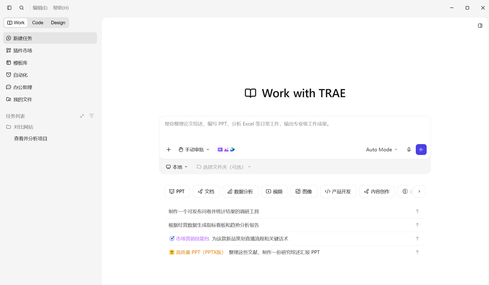
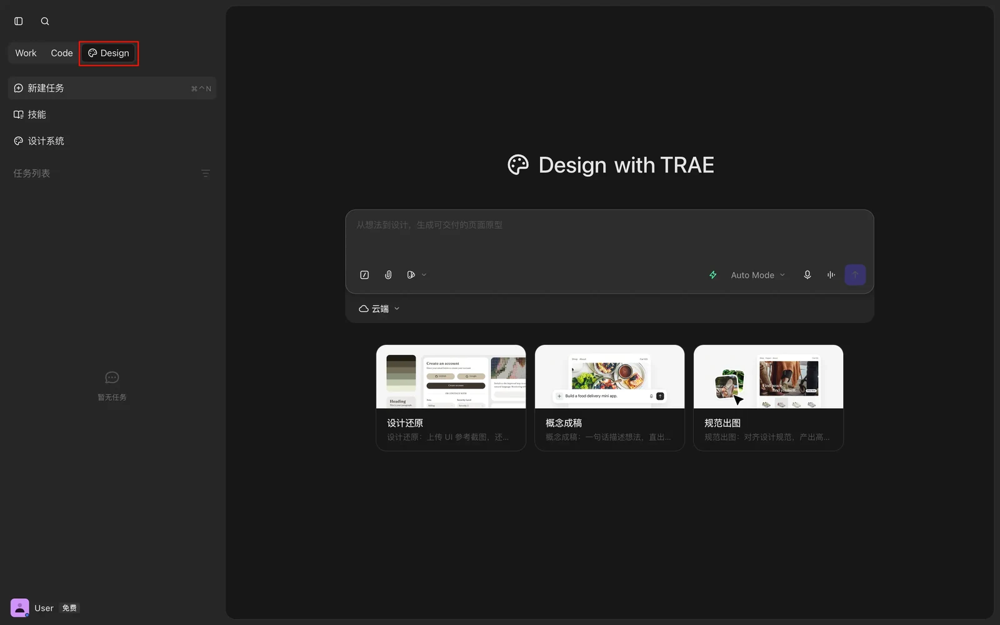
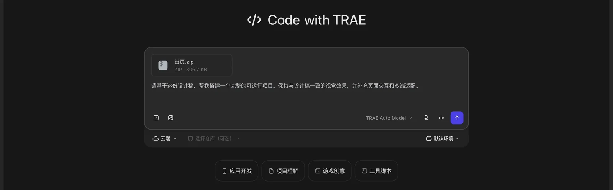
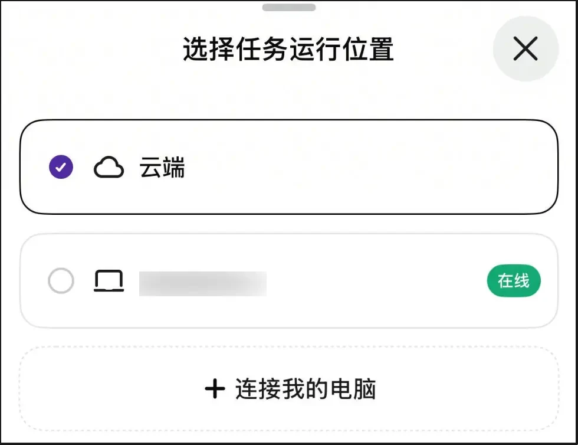
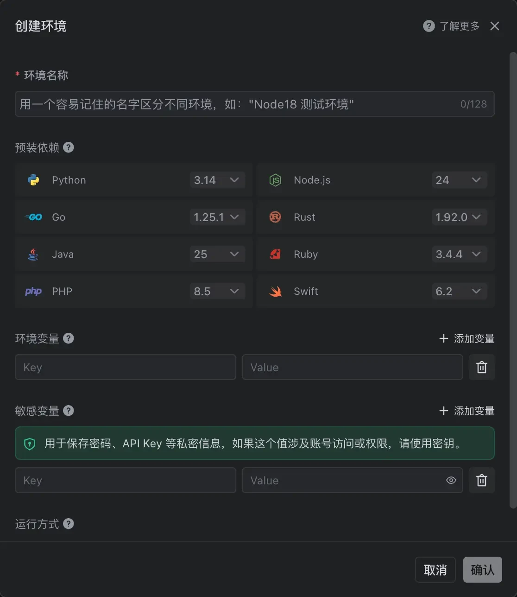
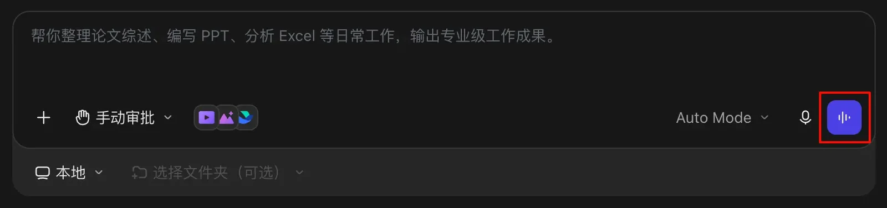
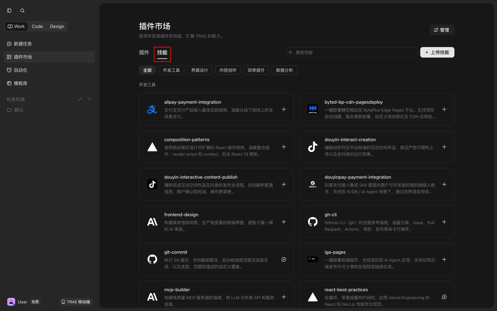

出品方
字节跳动（TRAE）
CHAPTER 02
TraeWork（字节 TRAE 旗下）是一款云端 AI 原生工作台，与 TraeCode（AI IDE）同属 TRAE 产品矩阵但定位不同：TraeWork 面向更广泛人群，设有 Work / Code / Design 三种模式，桌面、网页、手机三端实时同步。它最大的杀手锏是跨端协同——在外面用手机「按住说话」派个任务，回到电脑前接着看结果。Code 模式下由 AI Agent 主导开发，能从 0 到 1 建项目，也能对着已有代码库迭代、修 Bug。当前采用积分计费并提供会员套餐；免费权益、赠送积分和模型权限可能随账号或活动变化，请以账号内套餐与用量页面为准。

图源：TRAE 官方文档与客户端界面（仅用于教学对比）
一个 Workspace 内切换三种角色：Work（写文档 / 整理数据 / 做演示等非开发）、Code（编码 / 调试 / Git）、Design（AI 一站式完成设计，支持导出 Figma / 从 Figma 还原代码）。文档和代码不必在两三个软件间来回搬，切换只改左上角那一处。

Code 模式由 AI Agent 主导开发：既能从 0 到 1 自动建项目、装依赖、跑起来，也能对着已有代码库迭代、修 Bug、做重构、走 Git 工作流。支持 100+ 编程语言，底层共享 TraeCode 同源的 SOLO Agent 引擎（TRAE Agent 曾在 SWE-Bench 编码榜单登顶）。用自然语言下达指令，AI 自动规划并执行；运行环境可在本地与云端之间切换。

桌面 / 网页 / 手机数据实时同步，手机上就能派任务、看进度。TRAE 移动端是「任务下发中心」：可以直接把任务丢给云端跑，也可以下发给在线的电脑（可添加多台），桌面端负责任务执行与产物验收。出门在外也能推进工作，这是它相对其他工具最突出的差异化能力。

Code 模式下可自建云端运行环境：语言版本按需预装（Python / Node.js / Go / Rust / Java / Ruby / PHP / Swift），依赖装一次就复用，换电脑不用重搭环境。密钥写进敏感变量由 KMS 加密存储、只在运行时读取；沙箱出站流量默认走白名单（npm / PyPI / GitHub 等常用依赖源），本地环境不一致的问题随之消失。

输入框右下角的语音讨论入口支持多轮语音往返：随口讲思路，AI 会追问、补充甚至质疑，适合需求梳理和方案推敲。讨论结束后自动整理——去掉「嗯 / 就是 / 那个」这类口癖、识别「不是 A 是 B」的自我修正只保留最终结论，再按主题结构化成一份纪要，原始语音记录也随时可查。

技能用一份 SKILL.md 描述「这类任务怎么做」，按需加载——只在任务相关时才读进上下文，不常驻占用。可在插件市场一键安装，也能上传本地技能，把团队规范或自己的 SOP 沉淀成可复用能力；配合 MCP 接入外部工具与企业系统，进一步拓展边界。
